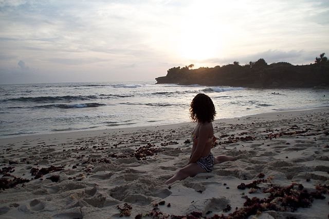
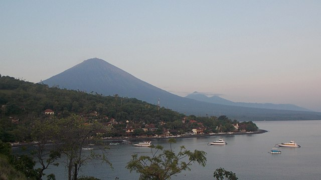
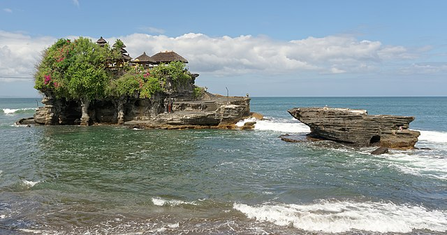

- Playa de Padang Bay .
- Volcán Monte Agung .
- Pasifika Museum .
- Visitar Denpasar.
- Visitar Templo de Tanah Lot .




¿Viajas por primera vez? ¿Ya has estado aquí antes? ¡En realidad, da igual! Seguro que en este artículo descúbres algo nuevo. Esta isla ofrece una amplia variedad de sitios que ver y cosas que hacer para que no te aburras ni un momento. Y para que no te pierdas nada, te traemos una lista con los 42 lugares más importantes que visitar en Bali Piérdete entre la exuberante vegetación balinesa, los campos de arroz, los templos sagrados, las impresionantes playas y la vida marina submarina. Y por si no tienes suficiente, hemos añadido un vídeo con 12 lugares poco conocidos (y menos turísticos) para tener en cuenta si lo que estás planificando es un viaje más alternativo y fuera de lo común.